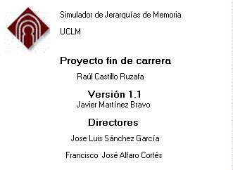

Buscar ayuda sobre
cache
Configuración del simulador
Este simulador ha sido diseñado con propósitos didácticos, de forma que alguien que desconozca totalmente en lo que consiste una jerarquía de memoria pueda obtener, a través de su manejo conocimientos sobre la composición y funcionamiento de una jerarquía de memoria y las distintas alternativas que existen.
En concreto, se pretende que el simulador sea una aplicación totalmente interactiva, con una interfaz sencilla y flexible en cuanto a la visualización de los detalles de simulación que se muestran. Cualquier usuario pueda corregir o verificar paso a paso un problema hecho a mano y descubrir sus errores y la forma correcta de realizar el proceso.
